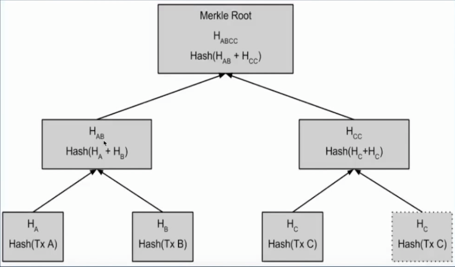
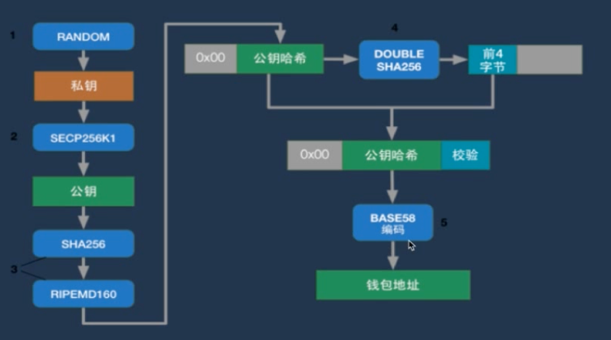
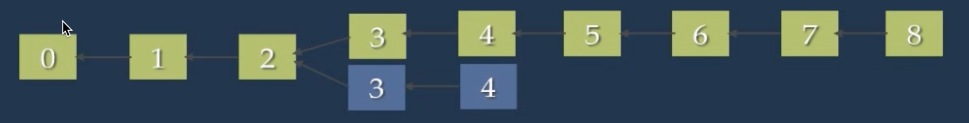

比特币基本概念
区块链的一个典型应用就是比特币。本质是一个数字资产的公开分布式账本的P2P网络。该账本的正确性和安全性由矿工组成的子网保证，并由矿工审核和记录所有的交易，以获取比特币作为奖励。
参考博文
PoW(Proof of Work)
PoW也被称为挖矿，例如BItcoin中不断尝试哈希值的过程，实际是花费较昂的计算资源。
在产生下一个区块的过程中，奖励总数给第一个解决数学难题的矿工。
矿工为了解决数学难题，不断改进矿机，增大算力，提高称为第一个找到下一个区块者的概率。
这种方式很浪费资源，因为大家希望得到奖励，所以不会捣乱。
PoS(Proof of Stake)
在PoS模式中，根据代币的持有数量，产生下一个区块的创建者具有某种程度的确定性。
PoS系统并没有区块奖励。因此矿工只拿到交易费。
PoS模式的代币产生基本不需要消耗算力，效率比PoW高得多。
这种方式下，持有代币最多的那个人，定期会获得利息，为了保护自己的财产，所以也不会捣乱。
钱包地址
钱包地址应该是该用户公钥的一个hash，为什么不直接用公钥呢，是因为它太长了，存放在区块（1M）中影响交易量。
每个人可以有多个钱包，因为只要有一个私钥就能够导出一个公钥来，所以追踪一个财产是比较困难的，需要知道他所有的钱包地址。
交易UTXO
交易包含以下三项
- 交易的输入（UTXO指针）
- 交易的输出（UTXO）
- 解锁脚本（私钥签名、公钥）
UTXO（Unspent Transaction Output）代表了一个未被消费的交易输出。比如：
A通过挖矿得到了12.5个比特币，UTXO池（数据库）中会记录着A得到的这12.5个比特币的UTXO，记为UTXO1。然后A将转账给B和C各5个比特币，并转给自己2.5个比特币。这里有几点需要说明，首先当A的这个转账的交易发出后，数据库中UTXO1将被删除，继而产生新的记录分别记为，UTXO2（对应转给B的5个比特币），UTXO3（对应转给C的5个比特币），UTXO4（对应转给A的2.5个比特币）。这里为什么需要转给A自己2.5个比特币呢，那是因为如果这次交易中这UTXO1所代表的12.5个比特币最终都会被花掉（因为UTXO1作废了），如果不把余额转给自己，那么这将作为打包区块的矿工的小费进入他名下。而矿工会优先确认小费高的那个区块交易。
一个用户的余额是根据众多的他的UTXO计算出来的。
其他
每个区块中的记录第一个交易是coinbase即代表刚从“矿山”里挖出来的“金矿”，其实就是奖励给第一个算出合格哈希的矿工的比特币，每笔交易中流转的比特币最终都能回溯到，它被挖出来的那次coinbase，所以比特币难以造假。
经过6个以上区块确认的交易才是安全确认的。
举个例子，有一些挖矿者先收到block A，另一些挖矿者先收到的是block B。那些收到block A的挖矿者将要继续沿着他们的分支挖矿，而其他人沿着Block B的分支挖矿（目前来看同一份钱被花了两次）。我们假设在B分支上的挖矿者先成功挖到下一个block，当他们收到这个消息后，在A分支的人会注意到现在B分支是最长的，于是就会转换到B的分支。在A分支上的工作就会迅速的停止，这样每个人就会都在同一个顺序的blockchain上工作了。所有在block A里面的待定交易将会继续保持待定状态，随后会在B分支上被放到新的block里，这样，所有的交易最终还是会被验证的。
假设交易中，买家给了卖家比特币来购买商品，但是使用的确是分叉链中产生的UTXO，如果卖家心比较大，直接发货了，之后如果原来那条分叉链被抛弃，那么整条链条中基于被抛弃分叉链所产生的UTXO都将失效的，即卖家收到的钱又回到了买家手里。
这么理解应该是错的，因为UTXO是一个数据结构，即使在分叉链中产生的UTXO应该都是一样的。

卖家真正担心不应该是诚实节点造成的分叉，而应该是恶意节点来篡改记录。那么恶意节点可能如何来篡改呢？
比如一个恶意的买家，先向卖家付了钱，卖家在交易被确认一次后就马上把货物给了买家。买家在收到货物后想要把刚花出去的这笔钱再花一遍，听起来好像很不可能但是这确实是有可能的。只要这个买家掌握了大量的算力，以更快的速度去确认交易，让包含自己第二次交易的链的长度超过第一次交易（用的同一笔钱）所在链的长度，那么根据约定第二次交易将会被网络采纳，即卖家得到的钱将无效，即他的那条UTXO将不被其他节点承认。这个双花犯罪的关键在于追赶的速度（之所以一定为追赶，因为必定要先付款给卖家再作假赶超）。要避免这个双花的问题的话，就让卖家默认等到确认6次以后再发货，这时恶意买家已经落后6个区块了（比之前假设的确认1一次就发货的难度大得多），想要追赶在理论上是不可行的，或者说不划算的，这样这笔钱才能说真正的到了卖家口袋里。
最终结论，两种担心都是存在的。之前那种所有的交易在链1和链2里面都存在，所以对于用户而言UTXO列表都是一样的，这个前提中，是可能存在某个交易在链1里面出现了，但是在链2里面没有出现的情况。因为不同矿工打包的规则是不同的，在同一个交易列表中，不同矿工可能选择不同的交易来打包，而谁算的最快那就用谁选的交易来打包。所以在临时分叉的情况下，可能存在这种情况
某个交易发出后，被采用链1（临时状态）的节点打包进了链条，但是却没有被链2所打包确认，这时这笔交易目前还不是安全的，因为如果这时链1被抛弃，那么这笔交易将依旧没被确认。
拜占庭将军问题（Byzantine Generals Problem）
结论：若叛徒数为m，当且仅当将军总数n>=3m+1时才有解
背景
- 拜占庭帝国派出10只军队，去包围进攻一个强大的敌人
- 至少6只军队同时进攻才能攻下敌国
难题
一些将军可能是叛徒，会发布假的（相反的）进攻意向
目的
将军们需要找到一种共识机制（即要么全部进攻，要不全部不进攻，免得打败仗，这里容易误解为一定要达成进攻意见），可以远程协商，赢取战斗
解决方案
- 每个节点给所有的其它节点发送消息
- 每个节点根据接收到的所有消息来决定最终的策略
缺点
每个节点需要向全网节点发送大量消息，可能造成网络延时
举例
假设这里叛将只有一个，忠将有3个。A是总将军。信号0代表不进攻，信号1代表进攻。
情况一：叛徒为B，忠臣为A，C，D
A(忠)发起进攻提议，即 A发给B，C，D信号1
B收到后，捣乱，发给A，C，D信号0，企图让部分将军不出兵，导致战斗失利
C收到后，向A，B，D如实发送信号1，代表自己收到的命令是1
D同理
最终
| 临近将军节点 | B收到的信息 |
|---|---|
| A | 1 |
| C | 1 |
| D | 1 |
对于B，因为是叛徒，则其肯定不会发起进攻，即使收到了三个1
| 临近将军节点 | C收到的信息 |
|---|---|
| A | 1 |
| B | 0 |
| D | 1 |
对于C进攻2票，故选择进攻。
A，D同理。最终会有半数以上（3位）的将军发起进攻。
情况二：总将军A为叛徒，B，C，D为忠臣。A试图让军队少于半数选择进攻。
A(叛)向B发出进攻信号1，向C和D发出信号0
B收到后，发给A，C，D信号1
C收到后，向A，B，D如实发送信号0，代表自己收到的命令是0
D同理
最终
| 临近将军节点 | B收到的信息 |
|---|---|
| A | 1 |
| C | 0 |
| D | 0 |
| 临近将军节点 | C收到的信息 |
|---|---|
| A | 0 |
| B | 1 |
| D | 0 |
| 临近将军节点 | D收到的信息 |
|---|---|
| A | 0 |
| C | 0 |
| B | 1 |
最终没有一个将军会发起进攻，叛徒依旧没有得逞。
密码学基础
非对称加密
公钥用于加密，私钥用于解密
公钥可以通过私钥生成，私钥可以推导出公钥
从公钥无法推导出私钥
相同输入每次加密得到的结果不同
优点：解决了密钥传输过程中的安全性问题
不足：虽然解决了信息安全传输不被窃听的问题，但是无法验证“该消息确实是发送方发送的”，有可能是中间人截获了信息然后篡改了内容，再发送的（只需要获取接受者公钥即可）。
哈希
对于存放用户密码的场景，简单的hash可能会收到彩虹表攻击（就是预先计算好一些列的哈希值，然后进行对比），而此时可以通过加盐来加大破解的成本。
数字签名

通过数字签名中的私钥加密摘要的过程，可以保证接受者可以判断消息是否来自发送方，且没有被篡改过。
证书授权中心CA（Certificate Authority）
为了解决这样一种情况：在获取公钥的过程中，被攻击者截获，然后把他的公钥发给了接受者，那么接受者将会把消息发给攻击者了。
- CA解决了电子商务中公钥的可信度问题
- 负责证明“我确实是我”的问题
- CA是受信任的第三方，公钥的合法性检验
- CA证书的内容
- 证书持有人的公钥
- 证书授权中心名称
- 证书有效期
- 证书授权中心的数字签名
前提是大家都信任这个CA（第三方的公司），大家都事先有CA的公钥。发送者将自己的公钥存放在CA里，CA用他的私钥进行签名，然后发送者将这个CA发给接受者，接受者通过CA的公钥去查看证书内的内容，即可取出发送者的公钥，以及其中的实体名称。因为CA是通过私钥签名的所以这个实体和公钥的绑定关系，所以无法伪造。
CA证书使用场景-HTTPS
- 客户端通过https向服务器发送安全连接请求
- 服务器用私钥加密网页内容，连同CA证书一并发给客户端
- 客户端会根据CA证书验证CA是否合法
- 如果验证失败，客户端弹出警告信息
- 如果验证通过，客户端使用CA证书中的公钥向服务器发送加密信息
- 像Chrome访问https报红，是因为在Chrome里面预先存储了一些CA，然后获取到的新CA不在这个列表里面，所以会警告，只要把这个新的CA导入到浏览器里面就不会再警告了。
未花费交易输出UTXO-Unspent TranXtion Output
- UTXO，用比特币拥有者的公钥锁定（加密）的一个数字
- UTXO == 比特币
- 比特币系统里没有比特币，只有UTXO
- 比特币系统里没有账户，只有UTXO（公钥锁定）
- 比特币系统里没有余额，只有UTXO（账户余额只是比特币钱包的概念）
- UTXO存在全节点的数据库里
- 转账将消耗属于你自己的UTXO，同时生成新的UTXO，并用接受者的公钥锁定。
交易验证-基于栈的脚本语言
栈（stack
交易验证
- 对栈的操作：OP_DUP（复制粘贴栈顶元素），碰到数字就压栈
- 逻辑运算符：OP_EQUALVERIFY（比较栈顶的两个元素是否相等，如果不等，整个脚本就执行失败了，如果相等，脚本会继续执行）
- 加解密运算符：OP_HASH160（对栈顶元素计算SHA256/RipeMD160），OP_CHECKSIG（验证签名）
- 算数运算符：OP_ADD，OP_SUB，OP_MUL，OP_DIV
锁定脚本
- OP_DUP OP_HASH160 <发送者公钥哈希> OP_EQUALVERIFY OP_CHECKSIG
- 在锁定的时候的接受者，即为解锁消费时候的发送者，这里是站在解锁消费的角度上来看
解锁脚本
- <发送者签名> <发送者公钥>（提供自己的签名和公钥来证明我确实是我）
交易验证：运行解锁脚本 + 锁定脚本 => True
-
疑问：验证发送者公钥哈希是否多余？
答：不是的，因为如果没有这一步，任何人只要根据自己的私钥生成一个签名和公钥都可以通过验证。通过验证公钥哈希，首先可以确定目前的发送者的公钥和当初UTXO生成时指定的接收者的公钥是相同的。然后再来判断你是否还能提供跟进一步的签名。
交易的传播
- 交易包含两部分，n输入和m输出，n>=0，m>0
- 输入 == 要被花费的UTXO + 解锁脚本
- 输出 == UTXO（币值 + 锁定脚本）
- 钱包软件生成交易，并向邻近节点传播
- 节点对收到的交易进行验证，并丢弃不合法交易
- 交易的size要小于区块size的上限
- 交易输入UTXO是存在的
- 交易输入UTXO没有被其他交易引用-防止双花（Double Spending）
- 输入总金额 > 输出总金额
- 解锁脚本验证
- 将合格的交易加入到本地的Transaction数据库中，并将合法交易转给邻近节点
区块的生成
矿工在挖块前要组建区块
将
coinbase交易打包进区块将交易池中高优先级的交易打包进区块
- 优先级 = 交易的额度 * UTXO的深度 / 交易的size
- 在优先级中加入UTXO的深度可以防止连续的交易（大额来回转账）造成的粉尘攻击
创建区块的头部
| 版本号 | 前一个区块的哈希 | Merkel树根 | 时间戳 | 难度值 | Nonce |
| :–: | :——: | :——: | :–: | :–: | :—: |
| | | | | | |挖矿成功后，将计算出来的随机数
nonce填入区块头部，向邻近节点传播
区块的验证链接
- 相邻节点收到新区块后，立即做一下检查
- 验证POW的nonce值是否符合难度值
- 检查时间戳是否小于当前时间2小时
- 检查Merkle树根是否正确
- 检查区块size要小于区块size的上限
- 第一笔交易必须是
coinbase - 验证每个交易
Merkle Tree结构

- 特点
- 全二叉树（如果叶子节点为单数则复制最后一个交易）
- 作用
- 防止数据篡改（叶子节点的改变会影响到根 ）
- 快速验证某个交易是否存在
- 节点存储Hash值
- 从叶子节点构造树
钱包地址的生成

区块链分叉
软分叉
- 由比特币交易的数据结构改变引起，但区块的数据结构未改变
- 老节点接收新旧格式的区块，新节点只接受新区块
- 矿工激活软分叉
MASF-Miner Acivated Soft Fork - 用户激活软分叉
UASF-User Activated Soft Fork- Core团队新发明，应对矿工的不合作
- 隔离见证
Segwit-Segregation Witness
- 矿工激活软分叉
硬分叉

- 由于交易结构的变化，或区块的结构的变化引起的
- 新旧节点相互拒绝对方的区块
- 产生两个币种，如BCC
临时分叉
- 仅发生于几乎同时爆块的情况
- 分叉是暂时的
- 根据公示机制，矿工最终切换到最长链上挖矿
- 短链上的交易全部无效，包括矿工费
隔离见证
- 隔离见证
- 安全隐患、黑客通过改变交易签名信息改变交易ID
- 将签名部分从交易中移除，从而间接扩容
- 香港共识
- 纽约共识
比特币私钥格式WIF-Wallet Import Format
- WIF私钥格式更短，标准格式私钥256个bit，16进制长度 = 256 / 4 = 64字符
- 经过Base65编码，表示长度更短
- 未压缩格式私钥：5开头，大小为51字节，第一位存放版本信息
- 压缩格式私钥（指生成压缩格式公钥的私钥）：K或L开头，大小为52字节，第一位放版本信息，多出的最后一个字节存放是否压缩信息
- WIF格式可以自动侦测地址错误（方便钱包筛选）
- 通过私钥的哈希值产生校验码
公钥-压缩格式&非压缩格式
- 公钥由X和Y轴的值组成
- 未压缩的公钥以
04开头 - 压缩公钥以
02/03开头
轻钱包&SPV验证机制
轻钱包是比特币的非全节点，存储空间限制
只下载
block header，size很小只有80字节，区块本身大小1M，1.8M| 版本号 | 前区块哈希 | Merkle树根 | 时间戳 | 难度值 | Nonce |
| :–: | :—: | :——: | :–: | :–: | :—: |
| | | | | | |向邻近全节点发送请求得到UTXO信息
简单支付验证SPV -
Simplified Payment Verification- 非全节点支付验证，判断交易是否已经在区块链中，多少确认数
- 向邻近全节点发送请求关于特定比特币地址和交易的信息
- 邻近全节点向钱包返回
Mekle Path验证路径和相应的block header - 钱包根据
Merkle Path计算出Mekle Root，验证是否匹配Block header里的Merkle Root值 - 确认响应的
Block header的深度是否大于6
私钥的生成建议
可以选用一串中文C和一串英文E，分别利用MD5进行hash，得到两个128bit的哈希字符串H(C)和H(E)，然后首尾相连（正好256bit）H(C)+H(E)，再将最后的 8位替换成某人的生日
挖矿
区块头部
| 版本号 | 前区块哈希 | Merkle树根 | 时间戳 | 难度值 | Nonce |
|---|---|---|---|---|---|
| 4字节 | 32字节 | 32字节 | 4字节 | 4字节 | 4字节 |
为了使区块头部哈希的结果值小于目标值，会不断修改尝试不同的nonce值，但是随着难度值的升高而且nonce值长度的限制，所以很可能遍历完所有的$$2^{32}$$个数都没有成功，这时矿工会调整交易的顺序或者coinbase里的extranonce以此来影响Merkle tree root的哈希值。以此来改变区块头部哈希的值，再来新的一轮尝试。
区块链安全
可塑性攻击
存在多个可被验证的交易签名，这样修改交易签名引起交易的哈希值改变，即TXID改变，而这样会导致原TXID无法找到。
隔离见证：
- 将可伪造的签名部分移除交易数据结构，在另一个地方存放签名
- 改变签名不影响TXID的变化
攻击者先去交易所提币，然后侦听数据包并截获交易所给自己账户转钱的区块数据包，并把其中关于自己的交易的签名修改了，那么会导致生成交易的ID和交易所里面记录的交易ID不同，于是这个被修改的区块就会先被主链所接受而拒绝交易所发出的区块，因为这笔交易已经被记录过了。这时，攻击者会联系交易所说自己并没有收到钱，是交易所的系统故障了要求重发，于是攻击者就获得了两份的比特币。